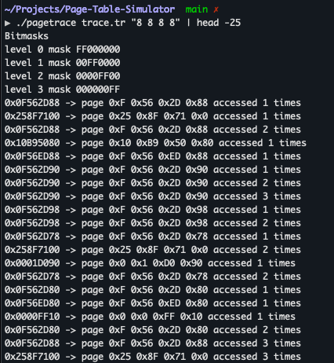
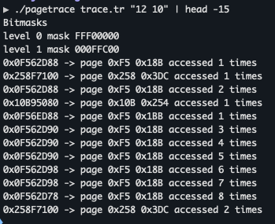

Project Overview
This project implements a sophisticated multi-level page table simulator in C++ that processes memory address traces and analyzes page access patterns. It demonstrates advanced memory management concepts and efficient data structure design for virtual memory simulation.
Technologies Used
C++
Memory Management
Data Structures
Bit Operations
File I/O
Make
Key Features
- Multi-level Page Tables: Configurable number of levels with customizable bit distributions
- Memory Access Tracking: Counts and analyzes how frequently different pages are accessed
- Trace File Processing: Reads and processes large memory address trace files
- Efficient Bit Operations: Uses bitmasks for fast address extraction and page number calculation
- Memory-Safe Implementation: Proper memory management with destructors to prevent leaks
- Error Handling: Comprehensive validation for command line arguments and file operations
How It Works
- Address Processing: Reads virtual memory addresses from trace files
- Bitmask Generation: Creates bitmasks for each page table level based on configuration
- Page Number Extraction: Uses bit operations to extract page numbers from addresses
- Hierarchical Traversal: Navigates through the multi-level page table structure
- Access Counting: Tracks how many times each page is accessed
- Output Generation: Produces detailed reports of memory access patterns
Address Translation Diagram
This diagram shows how a 32-bit virtual address is broken down into page table indices:
┌─────────────────────────────────────────────────────────┐
│ 32-bit Virtual Address: 0x0F562D88 │
├────────────┬────────────┬────────────┬────────────────┤
│ 0x0F │ 0x56 │ 0x2D │ 0x88 │
│ 8 bits │ 8 bits │ 8 bits │ 8 bits │
│ Level 0 │ Level 1 │ Level 2 │ Level 3 │
│ Index │ Index │ Index │ Index │
└────────────┴────────────┴────────────┴────────────────┘
│ │ │ │
▼ ▼ ▼ ▼
┌───────┐ ┌───────┐ ┌───────┐ ┌──────────┐
│Page │──▶│Page │──▶│Page │──▶ │ Access │
│Table │ │Table │ │Table │ │ Count │
│Level 0│ │Level 1│ │Level 2│ │ ↑ │
└───────┘ └───────┘ └───────┘ └──────────┘
Multi-Level Page Table Tree
The hierarchical structure of the page table with access counts at leaf nodes:
┌──────────────┐
│ Root │
│ (Level 0) │
└──────┬───────┘
│
┌───────────────────┼───────────────────┐
▼ ▼ ▼
┌─────────┐ ┌─────────┐ ┌─────────┐
│Entry 0x0│ │Entry 0xF│ │Entry 0x25│
│ Level 1 │ │ Level 1 │ │ Level 1 │
└────┬────┘ └────┬────┘ └────┬─────┘
│ │ │
┌────┴────┐ ┌────┴────┐ ┌────┴────┐
▼ ▼ ▼ ▼ ▼ ▼
┌───────┐ ┌───────┐ ┌───────┐ ┌───────┐ ┌───────┐ ┌───────┐
│ 0x0 │ │ 0x1 │ │ 0x56 │ │ ... │ │ 0x8F │ │ ... │
│Level 2│ │Level 2│ │Level 2│ │ │ │Level 2│ │ │
└───┬───┘ └───┬───┘ └───┬───┘ └───────┘ └───┬───┘ └───────┘
│ │ │ │
▼ ▼ ▼ ▼
┌─────┐ ┌─────┐ ┌─────────────┐ ┌─────────┐
│Leaf │ │Leaf │ │ 0x2D: 14x │ │ 0x71:3x │
│Nodes│ │Nodes│ │ 0xED: 2x │ │ │
└─────┘ └─────┘ └─────────────┘ └─────────┘
Bitmask Extraction
How bitmasks are used to extract page indices from a virtual address:
Address: 0x0F562D88 = 00001111 01010110 00101101 10001000
Level 0 Mask: 0xFF000000 = 11111111 00000000 00000000 00000000
AND Result = 00001111 00000000 00000000 00000000
>> 24 = 0x0F ✓
Level 1 Mask: 0x00FF0000 = 00000000 11111111 00000000 00000000
AND Result = 00000000 01010110 00000000 00000000
>> 16 = 0x56 ✓
Level 2 Mask: 0x0000FF00 = 00000000 00000000 11111111 00000000
AND Result = 00000000 00000000 00101101 00000000
>> 8 = 0x2D ✓
Level 3 Mask: 0x000000FF = 00000000 00000000 00000000 11111111
AND Result = 00000000 00000000 00000000 10001000
>> 0 = 0x88 ✓
Technical Implementation
Core Classes
- PageTable: Manages overall page table structure and bitmask operations
- Level: Represents individual levels in the hierarchy with child management
- TraceReader: Handles file I/O and trace processing
Key Algorithms
- Address Extraction: Efficient bitmask and shift operations for page number calculation
- Level Traversal: Recursive navigation through the page table structure
- Memory Management: Automatic cleanup with destructors to prevent memory leaks
Usage Example
# Compile the project
make clean && make
# Run with 2-level page table (10 bits each level)
./pagetrace trace.tr "10 10"
# Run with 3-level page table (8 bits each level)
./pagetrace trace.tr "8 8 8"
Sample Output
0x161E8A20 -> page 0x1 0x61 0xE8 accessed 2089 times
0x0DE08598 -> page 0x0 0xDE 0x8 accessed 782 times
0x15D6B6D8 -> page 0x1 0x5D 0x6B accessed 405 times
Project Highlights
- Academic Excellence: Part of CS480 coursework demonstrating advanced systems programming
- Performance Optimized: Efficient bit operations and minimal memory footprint
- Robust Error Handling: Comprehensive validation for all inputs and operations
- Scalable Design: Supports configurable page table levels and bit distributions
- Memory Safe: Proper cleanup prevents memory leaks in long-running simulations
Learning Outcomes
This project demonstrates mastery of:
- Advanced C++ programming concepts
- Virtual memory and page table architectures
- Efficient data structure design
- Memory management and resource cleanup
- File I/O and trace processing
- Bit manipulation and optimization techniques